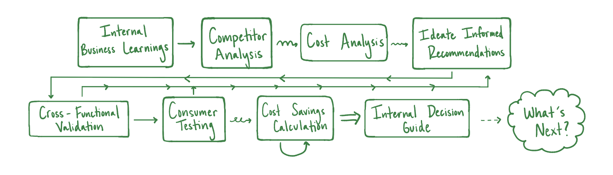
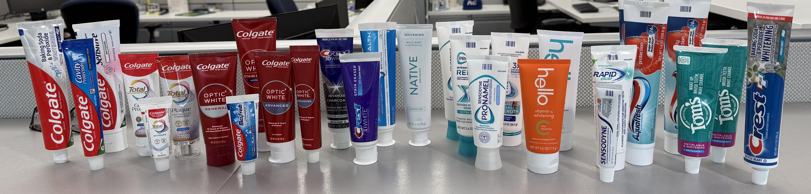
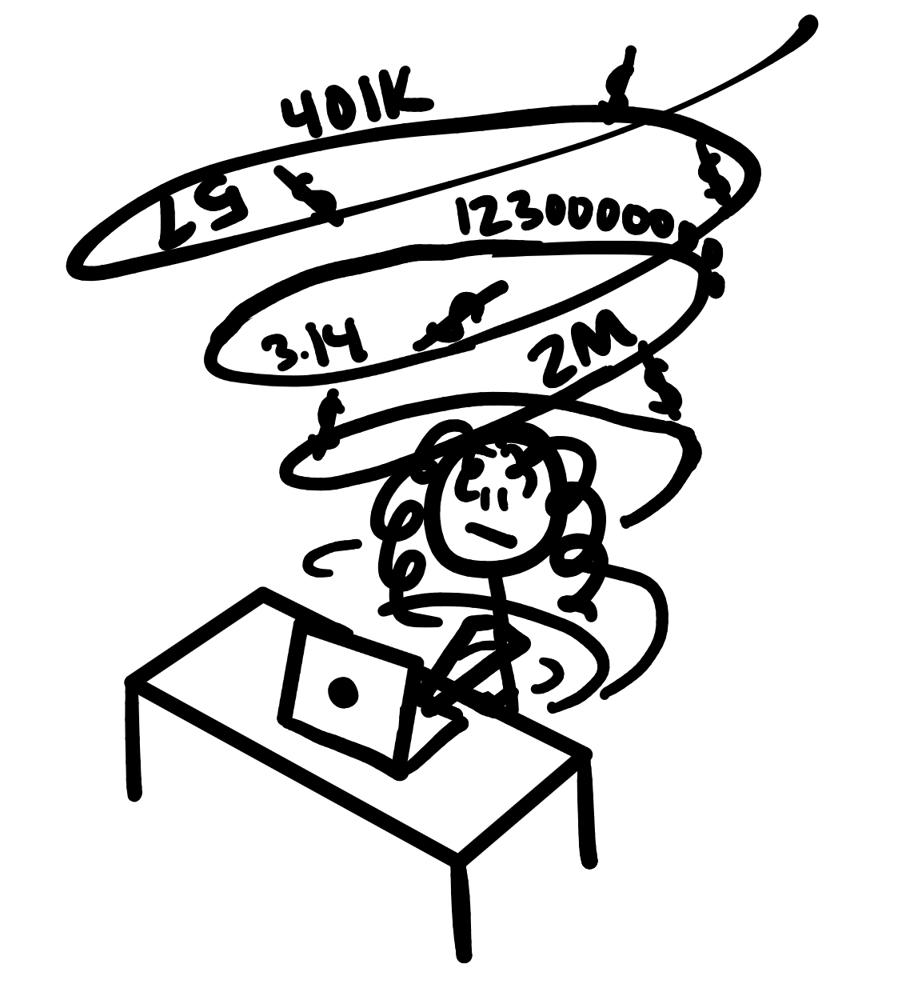
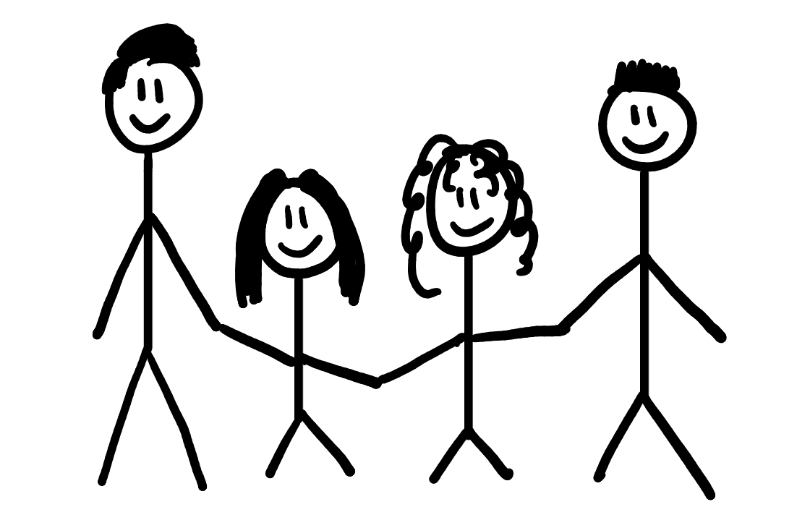
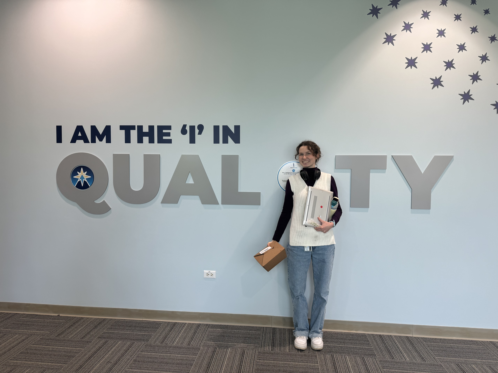

As a Research and Design Engineering Intern at Procter & Gamble, I led a competitor packaging landscape analysis to identify where P&G had opportunities to optimize cost, surfacing approximately $500K in potential savings without sacrificing manufacturability or competitive edge on the shelf. The work required synthesizing technical packaging data, consumer testing insights, and cross-functional constraints into actionable recommendations for live development decisions. Here, I learned how strategic assumptions and asking for guidance could help navigate ambiguous data, rather than waiting for certainty in variables that was never going to arrive.
Problem Statement
Conduct a competitor analysis to inform a set of packaging recommendations that optimize cost via design and manufacturing choices without sacrificing shelf quality or effective display next to competitors.
Methodology

Competitor Analysis
I systematically evaluated competitor packaging approaches across product categories and hierarchies relevant to P&G's development priorities — sustainable materials, production methods, shelf presentation, and cost signals. The goal was to identify the specific decisions competitors had made that P&G hadn't, and ask whether those decisions were worth exploring more deeply.

Navigating Ambiguous Data
While considering packaging change recommendations based on competitor analysis, the data environment to perform my cost savings analysis was noisier than I expected. Cost figures varied by source, changing volumes, and time period. Early in the project, this ambiguity caused me to stall — waiting for better data before committing to a direction. I learned that this was the wrong instinct, and instead worked to make explicit assumptions that eliminated variables, validate these assumptions, and move forward.

Restricting variable data to a standard definition prevents paralysis in noisy data situations. Making a defensible assumption, naming it out loud, and knowing when to ask for guidance rather would've prevented me from rerunning the numbers. I identified a better strategy to move forward, and stopped getting tied up in ambiguous data.
Consumer Testing
Data about packaging only tells part of the story. I developed and led consumer-facing testing to assess how packaging decisions actually read to users in practice — specifically to challenge assumptions that had been made about consumer perception. The gap between users preference and company assumptions is one of the most expensive places to be wrong.
I analyzed my results qualitatively and quantitatively to paint a better picture for my final set of recommendations.

Relearning for a Fresh Angle
As I was putting together my analysis, I realized I had overlooked a crucial angle because I didn't take time to fully understand technical processes early on. I tried to backtrack, but I did not have time to thoroughly extract meaningful insights from the data set from this perspective.
Digging deep into existing processes, technology, and data — and understanding why things work the way they do — is not a warmup for the real work. It is the real work. Every time I skipped it, I paid for it later. Thorough upfront learning isn't slow. It's the fastest path to a recommendation that doesn't get sent back.
Validating Cross-Functionally
After formulating my recommendations, I confirmed their feasibility and applicability across relevant teams to ensure they could be acted on after I left. While doing so, I recognized a need for better documentation that aligned cost tradeoff expectations among teams and developed documentation to anticipate and ease this experience in the future.

Design Requirements
Recommendations had to satisfy all four teams reviewing them — brand, engineering, manufacturing, and design — each of whom evaluated proposals through a different lens. Therefore, holistic recommendations needed to be:
- Cost effective
- Manufacturable
- Competitive on the shelf
- Consumer-centered
- In-line with product vision
Solution
The project produced two distinct deliverables — the landscape analysis and resulting packaging recommendations, and a cross-functional decision guide that addressed a communication gap I identified independently.
A competitor packaging analysis identifying approximately $500K in potential cost savings through specific manufacturing and design opportunities — each in the context of competitor choices.
A reference tool developed after I identified that brand, engineering, and design teams were operating from their priorities instead of a holistic evaluation of how packaging decisions affect cost and shelf quality. The guide clarified those tradeoffs in plain language, reducing circular processes that hindered design progress.
The Decision Guide
The decision guide was not part of my original scope. I noticed while carrying out my recommendations that misalignment across teams was creating friction that slowed progress down. Teams were evaluating proposals through their specific mental models and goals without a shared understanding of the tradeoffs involved. I built the guide to address that gap directly: a clear, accessible reference that aligned brand, engineering, and design on how packaging choices affect cost. I also standardized the document by eliminating the influence of variable quotes and volumes.
This was one of the pieces of work I was most proud of, not because it was technically complex, but because it required me to notice a structural problem that wasn't mine to solve, and decide to address it anyway.

What's Next
The recommendations and decision guide were delivered to the cross-functional team before the end of my internship and were intended for use in live packaging development decisions. The cost-saving opportunities identified are subject to P&G's internal validation and procurement processes before implementation.
For Me
I'm walking away from this experience with two distinct lessons as a designer. The first is the value of in-depth technical learning up-front. Analytical instincts only go so far when vast processes have extensive context and forethought. Misunderstandings about existing processes and technology bled into my recommendations, costing me time I could have spent moving forward. I now treat the upfront learning phase as non-negotiable.
The second is about navigating ambiguity: I spent too long early on waiting for comprehensive and "accurate" data; large datasets are always changing and have several limitations. Instead, I learned strategies to extract meaningful insights from given data, name my assumptions explicitly, and ask for a gut-check from someone with more context. Once I made this decision, the number of re-calculations I performed decreased greatly.